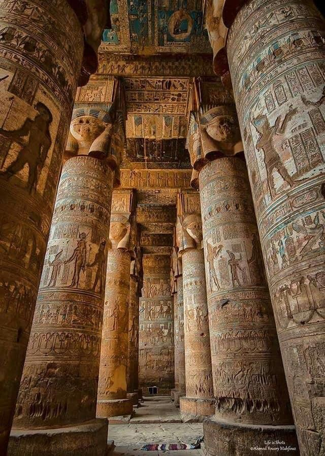

Karnak Temple is one of the largest and most impressive temple complexes in the world. It is located in Luxor and was built over nearly 2,000 years by different Egyptian pharaohs. The temple is famous for its massive columns, beautiful statues, sacred lake, and detailed hieroglyphic inscriptions that reflect the greatness of ancient Egyptian civilization.